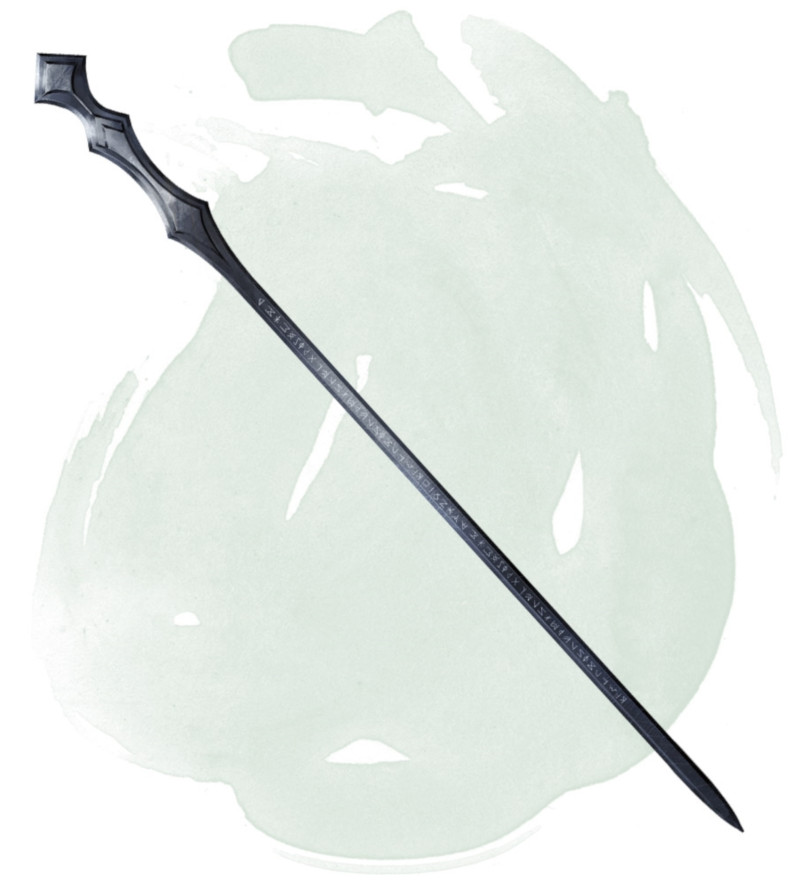

Staff of Power
Staff, very rare (requires attunement by a sorcerer, warlock, or wizard)
This staff can be wielded as a magic quarterstaff that grants a +2 bonus to attack and damage rolls made with it. While holding it, you gain a +2 bonus to Armor Class, saving throws, and spell attack rolls.
The staff has 20 charges for the following properties. The staff regains 2d8 + 4 expended charges daily at dawn. If you expend the last charge, roll a d20. On a 1, the staff retains its +2 bonus to attack and damage rolls but loses all other properties. On a 20, the staff regains 1d8 + 2 charges.
Power Strike. When you hit with a melee attack using the staff, you can expend 1 charge to deal an extra 1d6 force damage to the target.
Spells. While holding this staff, you can use an action to expend 1 or more of its charges to cast one of the following spells from it, using your spell save DC and spell attack bonus: cone of cold (5 charges), fireball (5th-level version, 5 charges), globe of invulnerability (6 charges), hold monster (5 charges), levitate (2 charges), lightning bolt (5th-level version, 5 charges), magic missile (1 charge), ray of enfeeblement (1 charge), or wall of force (5 charges).
Retributive Strike. You can use an action to break the staff over your knee or against a solid surface, performing a retributive strike. The staff is destroyed and releases its remaining magic in an explosion that expands to fill a 30-foot-radius sphere centered on it.
You have a 50 percent chance to instantly travel to a random plane of existence, avoiding the explosion. If you fail to avoid the effect, you take force damage equal to 16 x the number of charges in the staff. Every other creature in the area must make a DC 17 Dexterity saving throw. On a failed save, a creature takes an amount of damage based on how far away it is from the point of origin, as shown in the following table. On a successful save, a creature takes half as much damage.
The staff has 20 charges for the following properties. The staff regains 2d8 + 4 expended charges daily at dawn. If you expend the last charge, roll a d20. On a 1, the staff retains its +2 bonus to attack and damage rolls but loses all other properties. On a 20, the staff regains 1d8 + 2 charges.
Power Strike. When you hit with a melee attack using the staff, you can expend 1 charge to deal an extra 1d6 force damage to the target.
Spells. While holding this staff, you can use an action to expend 1 or more of its charges to cast one of the following spells from it, using your spell save DC and spell attack bonus: cone of cold (5 charges), fireball (5th-level version, 5 charges), globe of invulnerability (6 charges), hold monster (5 charges), levitate (2 charges), lightning bolt (5th-level version, 5 charges), magic missile (1 charge), ray of enfeeblement (1 charge), or wall of force (5 charges).
Retributive Strike. You can use an action to break the staff over your knee or against a solid surface, performing a retributive strike. The staff is destroyed and releases its remaining magic in an explosion that expands to fill a 30-foot-radius sphere centered on it.
You have a 50 percent chance to instantly travel to a random plane of existence, avoiding the explosion. If you fail to avoid the effect, you take force damage equal to 16 x the number of charges in the staff. Every other creature in the area must make a DC 17 Dexterity saving throw. On a failed save, a creature takes an amount of damage based on how far away it is from the point of origin, as shown in the following table. On a successful save, a creature takes half as much damage.
| Distance from Origin | Damage |
|---|---|
| 10 ft. away or closer | 8 x the number of charges in the staff |
| 11 to 20 ft. away | 6 x the number of charges in the staff |
| 21 to 30 ft. away | 4 x the number of charges in the staff |
Dungeon Master´s Guide (SRD)
